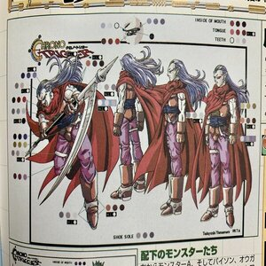

A quick view to the artbook of CT. Specifically, the color-palette of Magnus. You can have it by buying the GOTY edition, that also includes an action figure.
Also part of the Chrono Trigger artbook. For us, one of the first steps on the design of the characters. From left to right: Magnus, Frog. This is part of the beta version of CT. An exclusive artwork that shows the early game.

Bonus artwork of Chrono and Frog fighting. This poster is part of the Bundle that includes the CD Version. You can have it by buying it. Also, we will send to you a signed copy by Akira Toriyama.